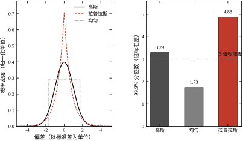
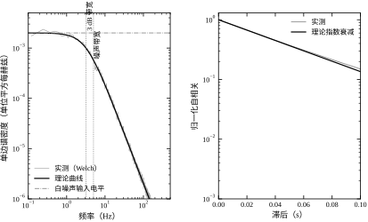
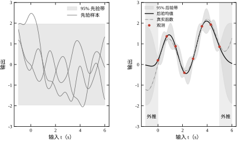
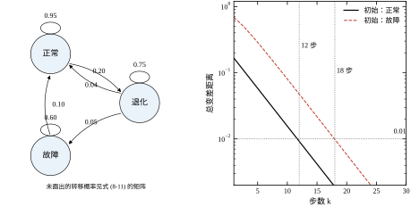
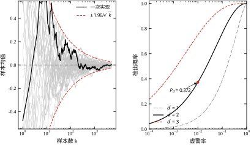

某台伺服轴做点位定位，位置环采样周期 T_s=1 ms，编码器装在电机尾端，减速比 1:20。设备空载运行一切正常，装上工件后，示波器上的电流指令出现明显毛刺，驱动器温度也比空载高。工程师把微分增益 K_d 从 0.01 提到 0.03，毛刺幅度随之增大到接近三倍；把 K_d 调回原值，毛刺变小，但到位后的爬行又回来了。
这个场景里，噪声的源头（编码器量化与电磁干扰）、传播路径（差分→微分→限幅）、最终危害（电流纹波、发热、机械磨损）都很清楚，真正缺的是三个定量答案：噪声在哪个频段、经过每一级放大了多少倍、落到执行器上究竟有多大。没有这三个数，调参只能靠试。
对纯微分环节 C_d(s)=K_d s，频率为 f 的分量被放大 \left|C_d(\mathrm{j}2\pi f)\right|=2\pi f K_d 倍。这条式子说明：微分不是笼统地“放大噪声”，而是按频率线性加权——10 Hz 的噪声放大 10 倍，1 kHz 的噪声放大 1000 倍（以 10 Hz 为基准）。因此只看时域均方根值（RMS）无法判断危害，必须知道噪声的功率谱落在哪个频段。这是本章要建立的第一种看法：把信号从“一条曲线”看成“一堆频率分量”。
工程上说的“不确定”，至少可以分成三类，处理工具完全不同。
| 类别 | 典型表现 | 数学描述 | 本书对应章节 |
|---|---|---|---|
| 随机信号与扰动 | 传感器噪声、风载、来料波动 | 随机过程、功率谱 | 本章、第 13、14 章 |
| 模型不确定 | 增益随工况漂移、延迟估计不准 | 参数区间、摄动、范数界 | 第 16–24、57、63 章 |
| 离散事件与故障 | 传感器断线、阀门卡涩、联锁动作 | 状态机、故障树、马尔可夫链 | 第 36、78 章 |
本章只处理第一类中“用概率描述信号与数据”的部分，并顺带建立马尔可夫链这一描述离散状态跳变的工具。模型不确定的定量处理留给鲁棒控制（第 57、63 章），故障的可靠性指标留给功能安全（第 36 章）。三者的共同点是：都不能用“看起来稳定”来判断，必须给出可核对的数。
三类不确定性不能互相替代，这一点在评审中最常被混淆。用随机过程的方差去描述“增益漂了 20%”，会得到一个与工况无关的常数，而真实的危害恰恰来自那 20% 的确定性偏移；反过来，用鲁棒控制的范数界去描述传感器噪声，会得到极其保守的结论，因为噪声的频谱结构被完全丢弃。判断属于哪一类，看的是“重复试验时它变不变”：同一工况下重复测量得到不同值，是随机；换工况后系统性地变，是模型不确定；状态离散跳变、一次就改变系统结构，是事件。
把上面的场景抽象出来，控制工程师在数据面前要回答五个问题，本章逐个建立回答它们的工具。
这五个问题对应本章的五张图：分布与尾部（问题 1）、谱与自相关（问题 2）、高斯过程回归（问题 3 的函数版本）、马尔可夫链（问题 4 的状态版本）、估计收敛与检测曲线（问题 3、4 的数值验证）。
五个问题有固定的回答顺序，顺序错了会白做。先回答“多大”和“在哪个频段”（问题 1、2），因为它们决定后面所有统计量的量纲与相关性；再回答“估计多准”（问题 3），因为门限与判据都建立在估计误差之上；最后才是“判据多可靠”和“要多少数据”（问题 4、5），这两个问题本质上是前三个的推论。现场常见的错误顺序是先定门限、再测噪声，结果门限与噪声带宽不匹配，怎么调都不对。
如果只能记住一句话：随机性不能靠“看起来稳定”来判断，要用分布、谱和置信区间三件事把它钉住；三者缺一，结论就只是印象。
本章按“定义—推导—离散—边界—验证”推进。§8.2 给出随机变量、随机过程、高斯过程、马尔可夫链、估计与检验的最低限度定义；§8.3 推导五条在控制里天天要用的关系：线性系统对随机输入的响应、白噪声经一阶低通的方差、采样混叠、最小二乘的协方差、检验门限与检测概率；§8.4 把连续结论落到离散实现，讲清周期图、噪声增益、蒙特卡洛样本量；§8.5 说明这些结论在什么条件下失效；§8.6 用五个实验逐一验证前四节的公式；§8.7 收束为一份错误清单。
不同读者的路径：只关心现场调试的，读 §8.1、§8.2.3、§8.5，再跳到第 13、14 章；要做辨识与滤波的，读 §8.2–§8.4，之后接第 18、56 章；要做学习型控制的，重点读 §8.2.4 与 §8.3.7，之后接第 80 章。三条路径的共同落点是 §8.6 的脚本，不跑一遍，公式里的数都只是别人的数。
反例一：RMS 相同，危害差 400 倍。 两台设备的测量噪声 RMS 都是 5 mV，第一台噪声集中在 5 Hz 以下，第二台集中在 2 kHz 附近。对 T_s=1 ms 的回路，微分项对 2 kHz 分量的放大倍数是 5 Hz 分量的 400 倍（\omega 之比）。第二台设备的电流纹波、发热和磨损都明显更严重，但只看 RMS 的验收记录上，两台“噪声一样大”。结论：噪声指标必须带频段，或者直接用谱密度。
反例二：50 个样本估出的标准差不可信。 用 N 个独立样本估计标准差 s，其相对标准差约为 1/\sqrt{2(N-1)}。N=50 时约为 10.1%，也就是说真实标准差有相当概率落在估计值的 \pm20\% 之外；N=5 时相对标准差高达 35.4%。若用这个标准差去定报警门限，门限本身的误差就吃掉了大半安全余量。结论：报标准差必须同时报样本量与置信区间。
反例三：把相关数据当独立。 某温度回路以 1 s 采样记录了 1000 点，工程师按独立样本算均值标准误 \sigma/\sqrt{1000}\approx0.032\sigma。实际上该过程近似一阶自回归，相邻样本相关系数约 0.95。对这类过程，有效样本量近似为 N_{\mathrm{eff}}=N(1-a)/(1+a)，取 a=0.95、N=1000 得 N_{\mathrm{eff}}\approx25.6，真实标准误约 0.198\sigma，是原估计的 6.2 倍。结论：样本数不等于信息量，先看自相关再算标准误。
三个反例指向同一件事：概率论的公式都不难，难的是把“什么分布、什么频段、多少独立样本”这三个前提写清楚。本章后面所有推导，都建立在这三个前提已经写明的基础上。
本节只保留后面推导真正会用到的定义。凡是在第 13、14、18、56 章要展开的内容，这里只给骨架并注明去向。
随机变量是把试验结果映射为实数的函数。工程上更关心的是它的分布：累积分布函数（CDF）与概率密度函数（PDF）分别为
F_X(x)=P(X\le x),\qquad f_X(x)=\frac{\mathrm{d}F_X(x)}{\mathrm{d}x} \tag{8-1}
两条容易混淆的性质必须先说清。第一，f_X(x) 不是概率，概率是密度在区间上的积分；f_X(x)>1 完全合法（方差很小的分布就是这样），只有积分才有概率的量纲。第二，工程上最常用的不是某点的密度，而是分位数：x_q 满足 F_X(x_q)=q。报警门限、验收上限、置信区间全都由分位数给出，而不是由均值给出。
期望与方差定义为
\mu_X=E[X]=\int_{-\infty}^{\infty}x f_X(x)\,\mathrm{d}x,\qquad \sigma_X^2=E\left[(X-\mu_X)^2\right]=\int_{-\infty}^{\infty}(x-\mu_X)^2 f_X(x)\,\mathrm{d}x \tag{8-2}
均方根值（RMS）是 \sqrt{E[X^2]}=\sqrt{\mu_X^2+\sigma_X^2}，含均值；交流分量的大小才用 \sigma_X。这两个量在验收文件里经常被混用：一台输出带 10 V 偏置、1 mV 噪声的传感器，RMS 约 10 V，用它描述噪声毫无意义。报噪声必须报“去均值后的标准差”，或明确写“交流 RMS”。
对任意分布，切比雪夫不等式给出
P\left(|X-\mu_X|\ge k\sigma_X\right)\le\frac{1}{k^2} \tag{8-3}
取 k=3 得上界 1/9\approx11.1\%。很多工程习惯把“3\sigma”当成“几乎不会发生”，这只在高斯分布下成立（双侧概率 0.27\%）；对重尾分布，3\sigma 之外的概率可能比 11\% 还大。3\sigma 规则的强度取决于分布假设，不取决于系数 3。
实际数据往往不属于任何单一分布，而是几个机理的混合。典型例子是“基线高斯 + 偶发脉冲”：直方图在中间像高斯，两端却有一段明显抬起的“肩膀”。此时用单个高斯拟合，中间段拟合得很好，尾部完全错误。判断办法是把数据按幅值分段统计超限频率，若在 2\sigma 到 5\sigma 之间超限率下降得比高斯预测慢，就存在第二个机理。混合分布不是数学技巧，它对应现场“常态噪声 + 间歇干扰”的物理事实。
表 8-1 给出控制工程中最常见的七种分布。选择哪一种不是数学偏好，而由噪声的产生机理决定。
| 分布 | 参数 | 均值 | 方差 | 典型物理来源 |
|---|---|---|---|---|
| 均匀 U(a,b) | 上下界 | (a+b)/2 | (b-a)^2/12 | 量化误差、舍入误差 |
| 高斯 N(\mu,\sigma^2) | 均值、标准差 | \mu | \sigma^2 | 热噪声、多源独立扰动叠加 |
| 瑞利 | 尺度 \sigma | \sigma\sqrt{\pi/2} | (2-\pi/2)\sigma^2 | 二维高斯向量的模（振动幅值） |
| 指数 | 率 \lambda | 1/\lambda | 1/\lambda^2 | 故障间隔、泊松事件间隔 |
| 拉普拉斯 | 尺度 b | 0 | 2b^2 | 稀疏脉冲、重尾噪声 |
| 学生 t | 自由度 \nu | 0 | \nu/(\nu-2) | 小样本均值、未知方差 |
| 卡方 \chi^2_\nu | 自由度 \nu | \nu | 2\nu | 样本方差、残差平方和 |
表中前两行最常用，也最容易被误用。量化误差在量化步长远小于信号变化时近似均匀分布，方差为 q^2/12；一旦信号长时间停在某个码值附近，误差就不再均匀，而是变成与信号相关的确定性偏差，此时用“量化噪声”模型会低估误差。多源独立扰动之和趋近高斯，这是中心极限定理的结论（§8.2.8）；但若其中某一个源占主导（例如一台变频器的开关干扰），叠加结果仍然是非高斯的。
图 8-1 把其中三种分布画在一起：左图是概率密度，三者都按标准差归一，肉眼几乎分不出尾部差别；右图是 99.9% 分位数，高斯为 3.29\sigma、均匀为 1.73\sigma、拉普拉斯为 4.88\sigma。同一段“看起来差不多”的噪声，极端值的差距接近三倍。

结论很直接：用均值和标准差描述噪声是不够的，必须知道分布形状。验收指标若只写“噪声 RMS 小于某值”，一个拉普拉斯噪声源可以轻松通过，却会在每小时内产生几十次超出 3\sigma 的尖峰。
判定实测数据属于哪种分布，靠三样东西，而不是靠直方图“看着像”。第一是分位数对照：把样本的 50%、90%、99%、99.9% 分位数与候选分布的理论值列表比较，偏差系统性的那一列就能排除候选。第二是尾部计数：直接统计超过 3\sigma、4\sigma、5\sigma 的样本数，与理论概率乘样本量比较。第三是 Q-Q 图：横轴理论分位数、纵轴样本分位数，若尾部偏离直线，说明尾部模型错了。
样本量决定了能验证到什么程度。要估计 10^{-3} 量级的尾概率，至少需要 10^4 个独立样本，否则期望超限数不足 10 个，估计的相对误差超过 30%。这一点常被忽略：用一万个相关样本去验证 3\sigma 虚警率，实际独立样本可能只有几百个，得到的结论没有统计意义。若数据相关，先按 §8.3.4 折算 N_{\mathrm{eff}}，再判断样本量是否够。
两个随机变量的联合性质由协方差描述：
\mathrm{Cov}(X,Y)=E\left[(X-\mu_X)(Y-\mu_Y)\right],\qquad \rho_{XY}=\frac{\mathrm{Cov}(X,Y)}{\sigma_X\sigma_Y}\in[-1,1] \tag{8-4}
\rho=0 称为不相关，它与独立不是一回事：不相关只排除线性关系，独立排除一切关系。唯一的例外是联合高斯情形，此时不相关等价于独立，这也是高斯假设在滤波理论中如此好用的原因。
对向量 \boldsymbol{x} 作线性变换 \boldsymbol{y}=A\boldsymbol{x}+\boldsymbol{b}，有
\boldsymbol{\mu}_y=A\boldsymbol{\mu}_x+\boldsymbol{b},\qquad \Sigma_y=A\Sigma_xA^{\mathrm{T}} \tag{8-5}
式 (8-5) 是全书出现频率最高的概率公式：卡尔曼滤波的预测步（第 56 章）、最小二乘的协方差传播（§8.3.5）、不确定度的合成（第 13 章）都是它的特例。它还有一个直接推论：若 A 的某个奇异值很小，该方向上的方差被压缩；若奇异值很大，方差被放大。线性变换不创造信息，只重新分配方差。
二维情形可以手算，用来建立直觉。设两个通道噪声独立同分布、方差均为 1，作差与作和：y_1=x_1+x_2、y_2=x_1-x_2。此时 A=\begin{bmatrix}1&1\\1&-1\end{bmatrix}，AA^{\mathrm{T}}=2I，两个新变量的方差都是 2，协方差为 0。变换前后总方差从 2 变成 4，看似“变大了”，其实是坐标旋转后同一块方差被重新投影，行列式 |A|^2=4 正是面积的放大倍数。若改为 y_2=x_1，A 奇异，y_1 与 y_2 完全相关，协方差矩阵秩为 1，说明有一条方向上的信息被彻底丢失。
工程上区分协方差矩阵与相关系数矩阵：前者带量纲，后者归一化到 [-1,1]。多传感器融合时看相关系数更直观，做方差传播时必须用协方差。协方差矩阵的条件数（最大与最小特征值之比）衡量“病态程度”，条件数超过 10^6 时，直接求逆的数值误差会淹没真实信号，这也是卡尔曼滤波要用 Joseph 形式或平方根滤波的原因（第 56 章）。
随机过程是随时间演化的随机变量族 \{X(t),\,t\in\mathcal{T}\}。同一次试验得到的一条曲线称为样本函数或一次实现；重复试验得到一族曲线，才谈得上统计量。工程上最容易犯的错误，是拿一条曲线去谈“分布”——单次实现无法定义期望，只能定义时间平均。
按描述强度，随机过程分四个层次：
宽平稳过程的两个核心函数是自相关与功率谱密度：
R_X(\tau)=E\left[X(t+\tau)X(t)\right],\qquad S_X(f)=\int_{-\infty}^{\infty}R_X(\tau)\mathrm{e}^{-\mathrm{j}2\pi f\tau}\,\mathrm{d}\tau \tag{8-6}
式 (8-6) 称为维纳–辛钦关系。S_X(f) 是双侧谱，工程仪表通常给单边谱 G_X(f)=2S_X(f)\,(f\ge0)，单位是“物理量平方每赫兹”。由逆变换取 \tau=0 得
\sigma_X^2=R_X(0)=\int_{-\infty}^{\infty}S_X(f)\,\mathrm{d}f=\int_{0}^{\infty}G_X(f)\,\mathrm{d}f \tag{8-7}
式 (8-7) 是“谱—方差”的换算依据：谱密度曲线下的面积就是方差。由此可以立刻得到两个工程结论。其一，方差相同不代表危害相同，面积相同而分布频段不同，后果完全不同。其二，只报 RMS 的噪声指标丢掉了全部频段信息，无法用于微分项、滤波器和高频执行器的设计。
相关时间是自相关的归一化面积：
\tau_c=\int_{0}^{\infty}\left|\frac{R_X(\tau)}{R_X(0)}\right|\mathrm{d}\tau \tag{8-8}
它回答“过多久之后，两个样本才算基本无关”。对一阶自回归过程 X_k=aX_{k-1}+w_k，R(m)=\sigma_X^2a^{|m|}，采样间隔为 T_s 时 \tau_c\approx T_s/(1-a)（离散求和近似）。\tau_c 越小，同样采样点数包含的独立信息越多；这一点在 §8.3.4 会变成有效样本量的公式。
这里有一个隐含假设必须点明：遍历性。式 (8-6) 的期望是对“一族曲线”求的，而现场只有一条曲线。能用一条曲线的时间平均去代替集合平均，前提是过程遍历。宽平稳不蕴含遍历：一个每次上电都随机取固定常数的过程是宽平稳的，但时间平均永远等于那个常数，不等于集合均值。工程上的实用检验是分段比较——把长记录切成若干段，分别算均值与方差，若段间差异远大于段内统计涨落，就应怀疑非平稳或非遍历，而不是继续套公式。
非平稳在实际数据里比教科书承认的更常见。温升、磨损、负载变化都会让统计量缓慢漂移。处理方式不是“找一条更长的记录把它平均掉”，而是缩短分析窗，用短时谱或滑动统计量，把“随时间变化”本身作为结论输出。第 20 章的时频分析会给出系统工具。
高斯过程（GP）是随机过程的一个特例，定义为：任意有限个时刻的取值服从联合高斯分布。它由均值函数 m(t) 与协方差函数 k(t,t') 完全确定，记作
X(t)\sim\mathcal{GP}\big(m(t),\,k(t,t')\big) \tag{8-9}
协方差函数（核函数）编码了“光滑程度”与“相关长度”。最常用的两个是平方指数核与指数核：
k_{\mathrm{RBF}}(t,t')=\sigma_f^2\exp\left(-\frac{(t-t')^2}{2\ell^2}\right),\qquad k_{\mathrm{OU}}(t,t')=\sigma_f^2\exp\left(-\frac{|t-t'|}{\ell}\right) \tag{8-10}
前者对应无限次均方可微的样本路径，后者对应一阶惯性系统的输出（OU 过程）。选择核函数本质上是选择先验假设：相信对象是光滑的，用 RBF；相信对象有折点或由一阶环节主导，用 OU。核函数选错，后验均值会把系统性偏差“平滑”成一条看似合理、实则错误的曲线。
GP 的解析可行性来自高斯分布的封闭性：联合高斯分布的任何边缘分布与条件分布仍是高斯。因此“先验 + 观测”的后验可以写成闭式，不需要采样或迭代（推导见 §8.3.7）。这也是它相对神经网络代理模型的优势——后者给不出严格的后验方差。
三个超参数（\sigma_f、\ell、\sigma_n）通常由最大化边缘似然确定，而不是交叉验证。边缘似然自动包含“拟合精度”与“模型复杂度”的权衡：\ell 太大会把数据平滑掉，太小则退化成“记住每个点”。数据量少于几十个点时，\ell 的估计本身很不可靠，应结合物理先验给定范围，而不是放任优化器自由搜索。
GP 的地位在第 80 章才真正显现：学习增强的 MPC 用它给残差模型配一个可信区间，把“预测不准”量化成约束的收紧量。本章只需建立两个认识：GP 是无限维高斯分布，因此线性运算与条件化都保持高斯；GP 的后验方差随远离数据而增大，这正是“外推不可信”的数学表达。
当状态取有限个离散值（正常、退化、故障）时，用马尔可夫链描述。设状态集为 \{1,\dots,n\}，转移概率 p_{ij}=P(X_{k+1}=j\mid X_k=i)，矩阵形式为
P=\begin{bmatrix}p_{11}&\cdots&p_{1n}\\ \vdots&\ddots&\vdots\\ p_{n1}&\cdots&p_{nn}\end{bmatrix},\qquad \sum_{j=1}^{n}p_{ij}=1 \tag{8-11}
每一行和为 1 的矩阵称为行随机矩阵。k 步转移概率由 P^k 给出。若存在分布 \pi 满足
\pi=\pi P,\qquad \sum_{i=1}^{n}\pi_i=1,\qquad \pi_i\ge0 \tag{8-12}
则称 \pi 为平稳分布。当链不可约（任意两状态互通）且非周期时，平稳分布唯一，且从任意初始分布出发都收敛到它。收敛速度由 P 的第二大特征值模长决定，|\lambda_2| 越接近 1，混合越慢。
连续时间版本把 P 换成速率矩阵 Q（非对角元为故障率，对角元为负的离开率之和），平稳分布满足 \pi Q=0。可靠性工程中的可用度、平均无故障时间（MTBF）都是这个框架的推论；第 36 章会用同一套符号计算安全仪表系统的平均失效概率。
并非所有链都有唯一平稳分布。若某个状态只能进不能出（p_{ii}=1），称为吸收态；一旦进入，链就停在那里，长期分布退化为该状态上的一个点。若状态集可以分成几个互不连通的闭集，平稳分布有无穷多个，取决于初始状态落在哪个闭集里。工程上“故障不可自愈、必须人工维修”的设备就是吸收链，此时谈“长期故障率”没有意义，应该谈“到吸收态的平均时间”，也就是 MTBF。判断方法很直接：画出状态转移图，看是否存在只进不出的节点或互不连通的子图。这一步在建模阶段做，比事后解释数据便宜得多。
估计。设真实参数为 \theta，由 N 个样本构造估计量 \hat\theta。三个指标刻画它：
\mathrm{bias}(\hat\theta)=E[\hat\theta]-\theta,\qquad \mathrm{MSE}(\hat\theta)=E\left[(\hat\theta-\theta)^2\right]=\mathrm{bias}^2+\mathrm{Var}(\hat\theta) \tag{8-13}
MSE 分解说明：无偏不等于准，有偏也可能更好。工程上常主动引入小偏差换取方差大幅下降（岭回归、正则化、指数加权平均），判据是 MSE 是否下降，而不是“是否无偏”。
除偏差与方差外，还有两个性质决定估计量能否用于在线场合。一致性指 N\to\infty 时 \hat\theta 依概率收敛到真值；不一致的估计量加大样本也没用，例如用固定长度的滑动平均去估一个缓慢漂移的增益。有效性指在无偏估计中方差是否达到下界（Cramér–Rao 界）；最小二乘在高斯噪声下达到该界，在非高斯噪声下则不是最优。工程上不必追求有效，但必须知道自己的估计量离下界有多远，否则无法判断“再加样本还有没有用”。
置信区间回答“重复实验时区间覆盖真值的频率”。95% 置信区间的正确读法是：若把同样的实验重复很多次，约 95% 的区间会覆盖真值；它不是“真值有 95% 的概率落在本次区间内”。后者是贝叶斯可信区间的说法，两者在样本量大时接近，在小样本或强先验下不同。
检验。设原假设 H_0（无故障）与备择假设 H_1（有故障），判决规则把观测空间分成两个区域。两类错误分别为
\alpha=P(\text{判 }H_1\mid H_0),\qquad \beta=P(\text{判 }H_0\mid H_1) \tag{8-14}
\alpha 是虚警率，\beta 是漏检率，1-\beta 是检测功效。两者不能同时任意小：在给定观测长度下，压低 \alpha 必然抬高 \beta。能同时改善两者的只有提高信噪比或增加样本量。这一权衡在第 78 章的故障诊断与 §8.5.3 的报警门限设置中会反复出现。
设 X_1,\dots,X_N 独立同分布，均值 \mu、方差 \sigma^2。弱大数定律给出
\bar X_N=\frac{1}{N}\sum_{k=1}^{N}X_k\ \xrightarrow{P}\ \mu \tag{8-15}
中心极限定理进一步给出分布形状：
\frac{\sqrt{N}\left(\bar X_N-\mu\right)}{\sigma}\ \xrightarrow{d}\ N(0,1) \tag{8-16}
工程含义是：不管单个样本服从什么分布，样本均值在 N 较大时近似高斯，标准误为 \sigma/\sqrt{N}。这解释了为什么“多测几次取平均”有效，也给出了误差棒的算法。
两个条件必须强调。第一，独立或弱相关：式 (8-16) 对强相关数据不成立，需要用有效样本量修正。第二，方差有限：对重尾分布（例如 t 分布自由度小于 2），方差不存在，CLT 失效，均值本身都不是稳定估计。现场数据里偶尔出现的极端值，正是这类问题的信号。
“N 要多大”没有统一答案，取决于原分布的偏度与尾部。对称有界分布（如均匀）十几个样本就已接近高斯；指数分布要三十个左右；偏度更大的分布要上百个。实用的判断方法是直接看样本均值的分布形状（做多次重复试验后画直方图），而不是背“N\ge30”这条经验规则。重尾情形下，收敛速度由尾部指数决定，可能慢到工程上不可接受，此时应改用中位数等鲁棒统计量，而不是加大样本。
本节推导八条结论。它们都有明确的前提，前提写在每条结论前面；前提不成立时，结论不是“近似变差”，而是可能完全反向。
设稳定线性时不变系统冲激响应为 h(t)、频率响应为 H(\mathrm{j}\omega)，输入为宽平稳过程 u(t)，输出 y=h*u。三条结论依次成立。
均值。取期望可与卷积交换，得
\mu_y=H(0)\,\mu_u \tag{8-17}
H(0) 就是直流增益。这条式子看起来平淡，却是“零均值噪声经线性环节后仍零均值”的依据，也是偏置误差会被直流增益放大的原因。
自相关。输出的自相关是输入自相关与 h 的双重卷积：
R_y(\tau)=\int_{-\infty}^{\infty}\int_{-\infty}^{\infty}h(\alpha)h(\beta)R_u(\tau+\beta-\alpha)\,\mathrm{d}\alpha\,\mathrm{d}\beta \tag{8-18}
功率谱。对式 (8-18) 作傅里叶变换，双重卷积变成乘积：
S_y(f)=\left|H(\mathrm{j}2\pi f)\right|^2S_u(f) \tag{8-19}
式 (8-19) 是本章最有用的公式。它把“噪声经系统后剩多少”变成了逐频率的乘法：每个频率分量按 |H|^2 加权，互不干扰，没有交叉项。传递函数在这里的作用不是“放大信号”，而是“给噪声谱整形”。
由式 (8-7) 与式 (8-19)，输出方差为
\sigma_y^2=\int_{0}^{\infty}\left|H(\mathrm{j}2\pi f)\right|^2G_u(f)\,\mathrm{d}f \tag{8-20}
对离散系统，式 (8-20) 退化为求和 \sigma_y^2=\sigma_u^2\sum_{k}h_k^2（输入为白噪声序列时）。\sum h_k^2 称为系统的噪声增益，它与直流增益 H(0)=\sum h_k 是两个不同的量：前者衡量噪声通过能力，后者衡量信号通过能力。两者之比决定了信噪比的恶化程度。
推导的关键一步是“交叉项消失”。把输出写成 y(t)=\int h(\alpha)u(t-\alpha)\mathrm{d}\alpha，求 E[y(t)y(t+\tau)] 时会出现 \int\int h(\alpha)h(\beta)E[u(t-\alpha)u(t+\tau-\beta)]\mathrm{d}\alpha\mathrm{d}\beta；宽平稳保证内层期望只依赖 \tau+\beta-\alpha，于是得到式 (8-18) 的双重卷积。若输入不是宽平稳，这一步不成立，后面的谱乘法全部失效——这是“先检验平稳性，再算谱”的顺序理由。
用数字感受一下噪声增益。一阶低通取 a=0.98，\sum h_k^2=(1-a)/(1+a)=0.0101，白噪声输入的标准差被压到原来的 1/10；而直流增益仍为 1，信号不衰减。看上去“白赚 20 dB”，代价是带宽只剩约 3 Hz，阶跃响应要几百毫秒才到位。信噪比的改善与响应速度的损失，在每一个线性环节上都同时发生，没有例外。
一个反直觉的推论：把带宽做宽会降低相位滞后、提高闭环带宽，但同时把更多高频噪声放进回路。这就是“快”与“静”的根本矛盾，第 14 章的滤波器设计与第 44 章的微分滤波都在处理它。
多个噪声源同时进入时，不能简单把各自的输出方差相加。若两个输入独立，输出方差确为两项之和；若二者相关（例如共模干扰同时进入两个通道），还会多出一项互谱贡献 2\mathrm{Re}\left[H_1H_2^{*}S_{12}\right]，其符号可正可负。差分接法之所以有效，正是因为它让两个通道的共模分量在相减时抵消，相当于把互谱项调到负值。“独立源方差相加”是结论，不是前提，用之前先确认源之间确实不相关。
取一阶低通 H(s)=1/(1+\tau s)，输入为单边谱密度 G_w 的白噪声。由式 (8-20)：
\sigma_y^2=G_w\int_{0}^{\infty}\frac{\mathrm{d}f}{1+(2\pi f\tau)^2} =\frac{G_w}{4\tau} \tag{8-21}
积分用 \int_{0}^{\infty}\mathrm{d}x/(1+x^2)=\pi/2，令 x=2\pi f\tau 即可得到。式 (8-21) 可以改写成 \sigma_y^2=G_wB_n，其中
B_n=\frac{1}{4\tau} \tag{8-22}
称为噪声带宽。对一阶系统，噪声带宽是 3 dB 带宽 1/(2\pi\tau) 的 \pi/2\approx1.571 倍。这个系数在传感器手册里经常被忽略：手册给的带宽通常是 -3 dB 带宽，而折算噪声要用噪声带宽，两者差 57%。
离散实现时，若用冲激响应不变法，h_k=(1-a)a^k，a=\mathrm{e}^{-T_s/\tau}，则
\sum_{k=0}^{\infty}h_k^2=\frac{(1-a)^2}{1-a^2}=\frac{1-a}{1+a} \tag{8-23}
把采样白噪声的方差 \sigma_w^2 换成单边谱密度 G_w=2\sigma_w^2T_s（理由见 §8.3.3），代入式 (8-21) 得连续近似
\sigma_y^2\approx\sigma_w^2\frac{T_s}{2\tau} \tag{8-24}
当 T_s\ll\tau 时，a\approx1-T_s/\tau，式 (8-23) 化为 (T_s/\tau)/2，与式 (8-24) 一致。这个一致性检验很重要：离散实现与连续公式对不上时，通常是谱密度的单双边换算错了，差一个 2 或一个 T_s。
再看一个极端情形。令 T_s=\tau，此时 a=\mathrm{e}^{-1}=0.3679，式 (8-23) 给出 0.462；而式 (8-24) 给出 0.5，误差 7.6%。采样已经粗到与时间常数同量级，连续近似开始失效。T_s/\tau<0.1 时用连续公式足够准；超过 0.2 就必须用离散精确式。
反方向也会失效。若 T_s=50\tau，a\approx0，滤波器实际上“记不住”上一拍，输出方差等于输入方差 \sigma_w^2；而连续式 (8-24) 给出 25\sigma_w^2，高估 25 倍。原因是连续公式假设采样足够密、能够分辨 \tau 尺度的变化，当采样间隔远大于时间常数时，这个前提彻底不成立。连续近似只在 T_s\ll\tau 一侧有效，越界后误差可以任意大。
图 8-2 左图是白噪声经过 \tau=0.05 s 一阶低通后的 Welch 谱，平坦段与式 (8-19) 的理论值重合（实测/理论 = 1.005），高频段按 -40 dB/dec 下降；右图是同一序列的自相关，与理论指数衰减 \mathrm{e}^{-|m|T_s/\tau} 基本重合，只在滞后较大处因样本有限而发散。

两张图是同一件事的两种视角：谱告诉你在哪个频段有能量，自相关告诉你在多长时间尺度上是相关的。做噪声预算时用谱，做采样周期选择时用自相关，两者不能互相替代。
连续过程以 f_s=1/T_s 采样后，离散谱是连续谱的周期延拓与折叠：
S_d(f)=\frac{1}{T_s}\sum_{k=-\infty}^{\infty}S_c(f+kf_s),\qquad |f|\le\frac{f_s}{2} \tag{8-25}
式 (8-25) 说明：高于奈奎斯特频率 f_s/2 的噪声不会消失，而是折叠进低频段，与有用信号叠加，事后无法分离。这是“数字滤波只能在采样之后做”的根本限制。
对上节的白噪声，若它在 0\le f\le f_s/2 内平坦、单边密度为 G_w，采样后方差为
\sigma_w^2=\int_{0}^{f_s/2}G_w\,\mathrm{d}f=G_w\frac{f_s}{2}=\frac{G_w}{2T_s} \tag{8-26}
反解即得 G_w=2\sigma_w^2T_s，这正是 §8.3.2 用到的换算。式 (8-26) 也解释了为什么同一个物理噪声，采样率提高一倍，离散样本的方差不变，但每个样本对应的谱密度水平减半——总功率守恒。
混叠的定量估计用一阶低通举例。若抗混叠滤波器为 H(s)=1/(1+\tau s)，输入白噪声，则折叠进基带的功率为
P_{\mathrm{alias}}=G_w\int_{f_s/2}^{\infty}\left|H(\mathrm{j}2\pi f)\right|^2\mathrm{d}f \approx\frac{G_w}{\pi^2f_s^2\tau^2} \tag{8-27}
最后一步用了 f_s\tau\gg1 的渐近展开。把它与基带功率 G_w/(4\tau) 相比，得
\frac{P_{\mathrm{alias}}}{P_{\mathrm{base}}}\approx\frac{4}{\pi^2\left(f_s\tau\right)^2} \approx\frac{0.405}{\left(f_s\tau\right)^2} \tag{8-28}
工程判据由此而来：要求混叠功率比基带低一个数量级，需 f_s\tau\ge2.0，即抗混叠滤波器的 -3 dB 带宽不超过 f_s/(4\pi)\approx0.080f_s。实际设计留一倍余量，取 f_s\tau\ge3（带宽约 0.053f_s），混叠比降到 4.5%。
代几个数：f_s\tau=1 时混叠功率比基带还高（40.5%），等于没有抗混叠；f_s\tau=2 时降到 10.1%；f_s\tau=3 时 4.5%；要做到 1%（-20 dB）需 f_s\tau\approx6.4。一阶低通的衰减只有 -20 dB/dec，靠它把混叠压到 -60 dB 需要 f_s\tau\approx64，采样率被迫提高一个数量级。这就是工程上宁可用四阶或八阶抗混叠滤波器、也不愿无限提高采样率的原因：滤波器的阶数比采样率便宜。
三个常见误解需要澄清。第一，“采样率高于信号最高频率 2 倍就够了”只对无噪声的带限信号成立；噪声是宽带的，采样率必须按噪声谱与抗混叠滤波器的组合来定。第二，数字滤波器无法恢复已被折叠的噪声，因为它与信号在频域上已经重叠。第三，提高采样率能降低量化噪声的谱密度，但不能降低其总功率（\sigma_q^2=q^2/12 与 f_s 无关），除非后续做抽取。
设样本 X_1,\dots,X_N 来自同一分布，均值 \mu、方差 \sigma^2。样本均值与样本方差为
\bar X=\frac{1}{N}\sum_{k=1}^{N}X_k,\qquad s^2=\frac{1}{N-1}\sum_{k=1}^{N}\left(X_k-\bar X\right)^2 \tag{8-29}
两者都是无偏的：E[\bar X]=\mu，E[s^2]=\sigma^2。若分母用 N，期望为 \sigma^2(N-1)/N，低估比例为 1/N：N=10 时低估 10%，N=100 时低估 1%。这就是贝塞尔修正的由来。
独立样本。\mathrm{Var}(\bar X)=\sigma^2/N，标准误为 \sigma/\sqrt N。样本标准差本身的相对标准差为
\frac{\mathrm{std}(s)}{E[s]}\approx\frac{1}{\sqrt{2(N-1)}} \tag{8-30}
式 (8-30) 是“标准差也需要样本量”的定量依据。要让它降到 5%，需要 N\approx201；降到 2% 需要 N\approx1251。现场用 20 个点报标准差，只能算粗估。
相关样本。若 X_k 是一阶自回归过程，滞后一阶相关系数为 a，则
\mathrm{Var}(\bar X)\approx\frac{\sigma^2}{N}\cdot\frac{1+a}{1-a},\qquad N_{\mathrm{eff}}\approx N\frac{1-a}{1+a} \tag{8-31}
式 (8-31) 来自 R(m)=\sigma^2a^{|m|} 的双重求和。a=0.95 时 N_{\mathrm{eff}}\approx0.0256N，即 1000 点只相当于 26 个独立样本。这不是统计学的细枝末节，而是 §8.1.5 反例三的由来。
置信区间。方差未知、样本量小时用 t 分布：
\bar X\pm t_{N-1,\,1-\alpha/2}\frac{s}{\sqrt N} \tag{8-32}
N>30 时 t 分位数与正态分位数差别已小于 5%；N=5 时 t_{4,0.975}=2.776，比正态的 1.96 大 42%。小样本报“\pm2\sigma”是低估不确定度。
需要多少样本。给定允许误差 \delta 与置信水平 1-\alpha，独立样本所需样本量为
N\ge\left(\frac{z_{1-\alpha/2}\,\sigma}{\delta}\right)^2 \tag{8-33}
取 \sigma=1、\delta=0.05、95% 置信，得 N\ge1537。若数据自相关 a=0.95，所需样本数还要乘以 (1+a)/(1-a)=39，约 6 万点。这个数字常常超出一次试验的记录长度，此时应改变试验设计（延长采样间隔、增加激励），而不是硬凑样本。
实际数据里 a 往往未知，可用两种方法估计 N_{\mathrm{eff}}。其一是直接估自相关：算前几个滞后的 R(m)，代入式 (8-31) 的形式，或对 \sum_m R(m)/R(0) 求和。其二是批均值法：把长记录切成 K 段，每段算一个均值，得到 K 个近似独立的样本，用它们的方差除以 K 作为 \bar X 的方差估计。批均值法的好处是不需要假设 AR(1)，缺点是需要至少 10–20 段，记录不够长时无法使用。
还有一个容易忽略的点：N_{\mathrm{eff}} 是对均值而言的。若关心的是方差、分位数或谱，等效样本量的折算方式不同，不能直接套式 (8-31)。报“有效样本量”时必须说明它服务于哪个统计量。
设数据由线性模型生成：
\boldsymbol{y}=X\boldsymbol{\theta}+\boldsymbol{v},\qquad \boldsymbol{v}\sim N\left(\boldsymbol{0},\sigma^2I\right) \tag{8-34}
其中 X 为 N\times p 的回归矩阵（由输入与输出历史构造），\boldsymbol{\theta} 为待估参数。最小二乘解与它的统计性质为
\hat{\boldsymbol{\theta}}=\left(X^{\mathrm{T}}X\right)^{-1}X^{\mathrm{T}}\boldsymbol{y},\qquad E\left[\hat{\boldsymbol{\theta}}\right]=\boldsymbol{\theta},\qquad \mathrm{Cov}\left(\hat{\boldsymbol{\theta}}\right)=\sigma^2\left(X^{\mathrm{T}}X\right)^{-1} \tag{8-35}
式 (8-35) 的三个结论分别说明：无偏、方差由数据矩阵决定、噪声方差成比例地放大一切。噪声方差 \sigma^2 由残差估计：
\hat\sigma^2=\frac{1}{N-p}\left\|\boldsymbol{y}-X\hat{\boldsymbol{\theta}}\right\|^2 \tag{8-36}
分母是 N-p 而不是 N，因为 p 个参数已经被数据“用掉”。
式 (8-35) 的工程含义集中在 (X^{\mathrm{T}}X)^{-1} 上。它的对角元是各参数方差因子的来源；它的条件数 \kappa 决定估计的脆弱程度——输入方向上的方差被放大 \kappa^2 倍。若输入在某频段没有能量，对应方向的参数几乎无法确定，这就是“持续激励”要求的统计解释。第 18 章会把这一点展开成试验设计的具体准则。
三个前提必须写明。第一，X 与 \boldsymbol{v} 不相关。若用闭环数据且噪声与输入相关，最小二乘有偏，需要工具变量或子空间方法（第 19–21 章）。第二，噪声同方差。若噪声水平随工况变化，应加权最小二乘。第三，模型结构正确。若真实对象有未建模动态，残差不是白噪声，式 (8-35) 的协方差低估真实误差，这一点在模型验证（第 24 章）中要用残差自相关检验。
持续激励不足的典型表现是参数值很大且正负抵消，但模型输出拟合得很好。若输入是阶跃，X 的列近似共线，X^{\mathrm{T}}X 接近奇异，参数估计的方差在某个方向上爆炸。这种模型用于控制是危险的：拟合好不代表参数对，偏差被参数间的抵消掩盖了（第 24 章会给出检验方法）。
对角化后看得更清楚。设 X^{\mathrm{T}}X=U\Lambda U^{\mathrm{T}}，则第 i 个方向上的参数误差标准差为 \sigma/\sqrt{\lambda_i}。\lambda_i 小的方向就是“数据里没有信息”的方向；\lambda_i 接近零时，该方向的参数实际上不可辨识。工程上的处理是：要么补做实验、加入伪随机或扫频激励；要么用正则化把该方向压住，承认它不可辨识，而不是假装估出来了。
把检测问题写成最简形式。观测为 y=s+v，v\sim N(0,\sigma^2)，两种假设为
H_0:\ s=0\quad\text{（无故障）},\qquad H_1:\ s=\mu\quad\text{（有故障）} \tag{8-37}
判决规则是 y>\gamma 时判 H_1。定义标准正态尾概率 Q(z)=1-\Phi(z)，两类错误为
\alpha=Q\left(\frac{\gamma}{\sigma}\right),\qquad \beta=Q\left(\frac{\mu-\gamma}{\sigma}\right) \tag{8-38}
给定虚警率 \alpha，门限由 \gamma=\sigma Q^{-1}(\alpha) 确定，检测功效为
P_d=1-\beta=Q\left(Q^{-1}(\alpha)-d'\right),\qquad d'=\frac{\mu}{\sigma} \tag{8-39}
d' 称为可检测性指数（信噪比）。若有 n 个独立样本取平均，d' 放大 \sqrt n 倍。式 (8-39) 是报警设计的核心：给定虚警率后，检出概率只由信噪比决定，与门限的具体数值无关。
代几个数看看。取 \alpha=0.01，则 Q^{-1}(0.01)=2.326；若 d'=2，P_d=Q(0.326)\approx0.372。也就是说，信噪比为 2 的故障，在 1% 虚警率下只有 37% 的概率被检出。若把门限放到 3\sigma（单侧虚警率 0.135%），90% 检出需要 d'=3+1.282=4.28，99% 检出需要 d'=3+2.326=5.33；而在 1% 虚警下，这两个数分别是 3.61 与 4.65。
这组数字解释了一个常见现象：现场把报警门限设成 3\sigma，觉得“很保守”，结果小故障长期检不出，直到演变成大故障才报警。门限的严格程度与检出的灵敏度是同一枚硬币的两面，不能只调一面。改善检出只能靠提高信噪比（更好的传感器、更长的积分时间、更强的特征提取），这也是第 78 章故障诊断的出发点。
对非高斯、未知分布的情形，Neyman–Pearson 引理给出最优判决形式：似然比与门限比较。它告诉我们“最优判决一定可以写成似然比形式”，但并不保证似然比容易计算；工程上常用高斯近似加经验修正。
实际使用中 \sigma 往往也是估出来的，此时门限应改用 t 分布：\gamma=t_{N-1,1-\alpha}\hat\sigma，而不是 z_{1-\alpha}\hat\sigma。N=10 时 t_{9,0.99}=2.821，比 2.326 高 21%；忽略这一项，实际虚警率会高于设计值。
多通道监测还会遇到多重比较问题。若同时监视 100 个通道，每个都用 1% 虚警率，那么即使全无故障，至少一个通道报警的概率为 1-0.99^{100}=63\%。处理办法有二：把单通道虚警率压到 \alpha/100（Bonferroni 修正），或改用控制整体错误率的准则。前者简单但保守，后者更精细。通道数一多，“1% 虚警”就变成了“每小时都报警”，这是监控系统误报泛滥最常见的统计根源。
设先验 f\sim N(\boldsymbol{0},K)，观测带独立噪声 y_i=f(t_i)+\varepsilon_i，\varepsilon_i\sim N(0,\sigma_n^2)。把观测与待预测点 t_* 的联合分布写出：
\begin{bmatrix}\boldsymbol{y}\\ f_*\end{bmatrix} \sim N\left(\boldsymbol{0}, \begin{bmatrix}K+\sigma_n^2I & \boldsymbol{k}_*\\ \boldsymbol{k}_*^{\mathrm{T}} & k_{**}\end{bmatrix}\right) \tag{8-40}
其中 \boldsymbol{k}_* 是训练点与 t_* 的协方差向量，k_{**}=k(t_*,t_*)。由联合高斯的条件分布公式，后验为
m_*=\boldsymbol{k}_*^{\mathrm{T}}\left(K+\sigma_n^2I\right)^{-1}\boldsymbol{y},\qquad \sigma_*^2=k_{**}-\boldsymbol{k}_*^{\mathrm{T}}\left(K+\sigma_n^2I\right)^{-1}\boldsymbol{k}_* \tag{8-41}
式 (8-41) 有三条可直接用于工程的性质。第一，后验均值是观测的线性组合，权重由核函数决定，远离数据处权重趋于零，均值回到先验均值（本书取 0）。第二，后验方差与观测值 \boldsymbol{y} 无关，只与采样点的位置有关；因此可以在做实验之前就规划“在哪里补点能最大程度降低不确定度”。第三，复杂度为 O(N^3)（矩阵求逆），N 超过几千时必须用稀疏近似或诱导点方法。
超参数（\sigma_f、\ell、\sigma_n）由边缘似然最大化确定：
\log p(\boldsymbol{y})=-\frac{1}{2}\boldsymbol{y}^{\mathrm{T}}\left(K+\sigma_n^2I\right)^{-1}\boldsymbol{y} -\frac{1}{2}\log\left|K+\sigma_n^2I\right|-\frac{N}{2}\log2\pi \tag{8-42}
式 (8-42) 的两项分别惩罚“拟合差”与“模型复杂度”，与第 26 章的正则化是同一件事的两种写法。
实现上不建议直接求逆。标准做法是对 K+\sigma_n^2I 作 Cholesky 分解 LL^{\mathrm{T}}，先解 L\boldsymbol{z}=\boldsymbol{y}、再解 L^{\mathrm{T}}\boldsymbol{\alpha}=\boldsymbol{z}，得到 \boldsymbol{\alpha}=(K+\sigma_n^2I)^{-1}\boldsymbol{y}，后验均值即 \boldsymbol{k}_*^{\mathrm{T}}\boldsymbol{\alpha}。这样做的数值误差约为条件数的平方根量级，比显式求逆稳定得多。若分解失败，通常是因为两个采样点几乎重合导致矩阵接近奇异，标准补救是在对角线上加一个极小的“抖动” \varepsilon I（例如 10^{-8}\sigma_f^2）。
还要区分两种方差。式 (8-41) 的 \sigma_*^2 是对隐函数 f_* 的方差，不含观测噪声；若要预测新的观测值，方差应加上 \sigma_n^2。把两者混用，会在“预测区间”与“置信区间”之间差出一个噪声项，在低噪声场景下差别不大，在高噪声场景下能差一倍以上。报告里必须写明用的是哪一种。
图 8-3 用一个仅 8 个观测点的例子说明后验的含义。左图是三条从先验抽出的函数曲线，它们的平滑尺度同为 \ell=0.5，但在数据点之外可以差得很远；右图是加入观测后的后验均值与 95% 置信带，数据点附近带宽收窄到约 1.19，远离数据的外推区展宽到 3.75，比值 3.15。

这张图给出 GP 最重要的工程性质：它自带“哪里不知道”的度量。带宽的宽窄不是装饰，而是可以直接用于主动采样、安全约束与模型外推判据的方差估计；这一点在参数化模型里是没有的。
平稳分布是转移矩阵的左特征向量，对应特征值 1：
\boldsymbol{\pi}^{\mathrm{T}}P=\boldsymbol{\pi}^{\mathrm{T}} \tag{8-43}
对两状态链，可直接解出
\pi_1=\frac{p_{21}}{p_{12}+p_{21}},\qquad \pi_2=\frac{p_{12}}{p_{12}+p_{21}} \tag{8-44}
取 p_{12}=0.02（正常→故障，每步 2%）、p_{21}=0.20（故障→正常，每步 20%），得 \pi_1=0.909、\pi_2=0.0909。若每步代表 1 h，长期平均有 9.1% 的时间处于故障态；正常态的平均驻留时间为 1/p_{12}=50 h。这两个数就是可靠性报告里的可用度与平均无故障时间，只是换了一套符号。
收敛速度用总变差距离度量：
\mathrm{TV}\left(\boldsymbol{\pi}^{(k)},\boldsymbol{\pi}\right) =\frac{1}{2}\sum_{i}\left|\pi_i^{(k)}-\pi_i\right| \le C\left|\lambda_2\right|^k \tag{8-45}
其中 \lambda_2 是 P 的第二大特征值（按模）。|\lambda_2| 越接近 1，混合越慢，初始状态的影响持续越久。对上例可算得 |\lambda_2|=|1-p_{12}-p_{21}|=0.78；从正常态出发，总变差距离降到 0.01 以下约需 9 步，从故障态出发约需 19 步。这个数在 §8.6 会用数值验证。
三个工程提醒。第一，马尔可夫性（无后效）是强假设：设备的退化往往有累积效应，“当前状态”若没有包含退化程度，转移概率会随历史变化。第二，转移概率通常随环境（负载、温度）变化，按全年平均算出的可用度不能用于极端工况。第三，平稳分布存在不等于收敛快，初始阶段的行为要用 P^k 逐步计算，不能直接套 \boldsymbol{\pi}。
还有一个换算关系值得记住：两状态链的平均驻留时间为 1/p_{12}，平均修复时间为 1/p_{21}，可用度为 A=1-\pi_2=1/(1+p_{12}/p_{21})。这三个量在可靠性报告里各有名字，但在马尔可夫框架下只是三个参数的代数组合。理解这一点，就能看出“提高可用度”的两条路径——降低故障率或缩短修复时间——在数学上是可交换的，在工程上的成本却完全不同。
图 8-4 是一个三状态链（正常、退化、故障）的结构与收敛过程。左图的弧线标出各转移概率，右图是总变差距离随步数的下降；从正常态出发 12 步进入 1% 带内，从故障态出发需要 18 步，两者都符合 |\lambda_2|=0.768 给出的指数包络。

这张图解释了可靠性评估里的一个坑：用平稳分布预测短期行为会系统性偏乐观。设备刚修好时处于“正常”态，但前二十个时间步的实际故障概率仍显著高于 4.15% 的长期值；反过来，刚从故障恢复的设备，短期内的再次故障风险被平稳分布低估。
连续公式落到代码里，有六件事必须处理：随机数怎么来、自相关怎么估、谱怎么算、噪声增益怎么算、仿真要跑多少次、递推怎么防漂移。本节按这个顺序讲，最后给一份数值陷阱清单。
计算机给出的是伪随机序列：由确定性算法产生、通过统计检验的数列。工程仿真只需三条保证：可复现（固定种子）、统计性质正确（均值、方差、相关性）、通道之间独立（不同用途用不同流）。
Python 中的推荐写法是
rng = np.random.default_rng(20261020) # PCG64，固定种子
w = rng.normal(0.0, sigma, N) # 白噪声序列不要用全局 np.random.seed：一旦某个函数内部调用了随机数，全局状态被悄悄推进，复现就断了。也不要为了“每章不同”而用时间戳做种子，那等于放弃复现。
并行计算时，不要给每个进程传“种子 + 进程号”这类相邻数。PCG64 对相邻种子的前几个输出可能相关，正确做法是用 SeedSequence 派生子流：
ss = np.random.SeedSequence(20261020)
children = ss.spawn(n_workers) # 每个进程一个独立子流
rng = np.random.default_rng(children[i])这样既能复现整体结果，又保证各通道噪声在统计上独立。§8.4.7 第 6 条的“种子碰撞”就是没做这一步的后果：几个进程生成同一条噪声，平均之后误差一点没降，却被误认为“平均无效”。
离散白噪声序列的定义是：均值为零、方差为 \sigma^2、不同时刻不相关。它在 |f|\le f_s/2 内的单边谱密度为常数 2\sigma^2T_s（式 (8-26)）。两点容易出错。第一，“不相关”不等于“独立”，高斯白噪声两者等价，均匀白噪声不等价；后者经过非线性环节后，输出统计量会与高斯的明显不同。第二，离散白噪声的带宽上限是 f_s/2，不是无穷；把它当成连续白噪声直接套连续公式，会得到偏大的方差。
有色噪声由白噪声经成形滤波器生成。若希望输出谱为 S_y(f)，取滤波器满足 |H(f)|^2=S_y(f)/(2\sigma_w^2T_s)，再用 §8.3.1 的式 (8-19) 验证。一阶自回归是最常用的成形滤波器：
x_k=a x_{k-1}+\sqrt{1-a^2}\,w_k,\qquad a=\mathrm{e}^{-T_s/\tau} \tag{8-46}
系数 \sqrt{1-a^2} 保证稳态方差为 1，与 a 无关。若漏掉这个归一化，时间常数一改，噪声幅度也跟着变，两组实验就不可比了。
由 N 个样本估计自相关，有两种常用写法：
\hat R(m)=\frac{1}{N}\sum_{k=0}^{N-m-1}x_{k+m}x_k \quad\text{或}\quad \hat R_u(m)=\frac{1}{N-m}\sum_{k=0}^{N-m-1}x_{k+m}x_k \tag{8-47}
前者有偏（随 m 增大而衰减），但半正定，做谱分析时必须用它；后者无偏，但 m 接近 N 时方差爆炸，只适合看前几个滞后。做谱用有偏，看相关用无偏，混用会导致谱出现负值或相关曲线尾部乱跳。
白噪声的样本自相关在 m\ne0 时期望为 0，标准差约 1/\sqrt N。因此 95% 置信带为 \pm1.96/\sqrt N：N=1000 时约 \pm0.062。若某个滞后明显超出这条带，说明数据里还有未建模的相关性，残差不是白噪声。这是第 24 章模型验证的核心判据，也是本章 §8.6 要复现的第一条统计结论。
自相关的置信带对大滞后不适用：m 接近 N 时有效样本只剩几个，\pm1.96/\sqrt N 会给出“显著”的假象。经验做法是只信 m<N/10 的部分，更长的滞后需要更长的记录。
采样周期与统计效率的关系也值得算一笔账。若为了“数据多”而把采样率提高到远超控制带宽，相邻样本的相关性接近 1，独立信息几乎不增加，只是让文件变大、计算变慢。判据是看 R(T_s)/R(0)：若它大于 0.9，说明一个采样间隔内过程几乎没变，可以抽取（decimation）后再做统计；抽取前要先低通，否则会把高频噪声折回低频，重演 §8.3.3 的混叠问题。采样率服务于控制带宽，不服务于统计精度，两者要分开设计。
最直接的谱估计是周期图：
\hat G(f_k)=\frac{2}{N f_s}\left|\sum_{n=0}^{N-1}x_n\mathrm{e}^{-\mathrm{j}2\pi kn/N}\right|^2, \qquad f_k=\frac{kf_s}{N} \tag{8-48}
系数 2/(Nf_s) 把双边功率折算成单边谱密度。频率分辨率是 \Delta f=f_s/N，记录越长分辨率越高。周期图有一个致命缺点：它是不一致的估计量——N 增大时，每个频点的方差并不减小，相对标准差始终接近 100%。谱线看起来越来越密，但每条仍然剧烈起伏。
工程上普遍用 Welch 法：分段、加窗、段间重叠、对段周期图取平均。若分成 L 段，方差降到约 1/L；代价是每段变短，分辨率降到 f_s/N_{\mathrm{seg}}。这是一个必须明说的取舍：
\Delta f=\frac{f_s}{N_{\mathrm{seg}}},\qquad \mathrm{std}\left(\hat G\right)\approx\frac{G}{\sqrt L} \tag{8-49}
例如 f_s=1 kHz、记录 60 s，取每段 4096 点、50% 重叠，则 L\approx28，分辨率约 0.244 Hz，谱的相对标准差约 18.9%。若要看 0.1 Hz 附近的低频峰，必须把段加长到 65536 点，此时 L 降到 1–2，谱又变得很毛糙——分辨率与平滑度不可兼得。
加窗是为了抑制泄漏。矩形窗对非整周期信号的旁瓣衰减只有约 -13 dB，强信号会把邻近的弱噪声“抹平”；Hann 窗旁瓣降到约 -31 dB，代价是主瓣展宽一倍、等效噪声带宽（ENBW）为 1.5 个频率格。做噪声谱时用 Hann 并除以 ENBW；做幅值谱时用幅值修正系数 2（Hann 窗相干增益 0.5 的倒数）。
分段参数怎么选，可以先算再定。给定记录长度 T 与目标分辨率 \Delta f，段长为 N_{\mathrm{seg}}=f_s/\Delta f，段数为 L\approx2T\Delta f（50% 重叠），谱的相对标准差为 1/\sqrt L。若要求相对标准差不超过 10%，需要 L\ge100，即 T\Delta f\ge50。这个乘积是“时间—带宽积”，它说明分辨率与平滑度不能同时任意提高：要 0.1 Hz 分辨率、10% 平滑度，至少需要 500 s 记录。评审时看到“0.01 Hz 分辨率、记录 10 s”的谱图，可以直接判定其起伏是噪声，不是物理峰。
重叠率也有取舍。50% 重叠约使方差再降 10%–20%，75% 重叠降得更多但段间相关性上升，实际独立段数并不按重叠比例增加。工程上 50% 是性价比最高的选择，超过 75% 收益很小。
还有一条常被忽略的前处理：去均值与去趋势。直流分量与缓慢漂移会在谱的低端堆起一个巨大的峰，泄漏到整个低频段。做噪声谱前先减去均值，必要时减去线性趋势；否则得到的“低频噪声”其实是温漂。
离散系统的噪声增益是冲激响应平方和：
G_n=\sum_{k=0}^{\infty}h_k^2 \tag{8-50}
它与直流增益 G_0=\sum h_k 的比值决定了信噪比的恶化：
\mathrm{SNR}_{\mathrm{out,dB}}=\mathrm{SNR}_{\mathrm{in,dB}}-10\log_{10}G_n \tag{8-51}
（输入为白噪声、输出幅度按 G_0 归一化时成立。）级联系统的噪声增益是各级噪声增益之积，但只在各级噪声独立时成立；若前级量化误差被后级相关处理，乘积公式会高估。
定点实现中，每次乘加都引入量化误差，方差约 q^2/12。误差经过后续环节时同样按 \sum h^2 传播，因此滤波器阶数越高、极点越靠近单位圆，量化噪声放大越严重。二阶节（biquad）级联比高阶直接型数值稳定，这是数字滤波器实现的通用做法，第 14 章会给出具体结构。
定标（scaling）是另一处陷阱。为了防止中间结果溢出，常把信号右移若干位，每移一位损失约 6 dB 信噪比。若同时用了 24 位 ADC 与 16 位中间运算，实际有效位数由最窄的一环决定；报“24 位精度”而不说中间运算是多少位，等于没报。
量化误差的量级可以手算。\pm10 V 量程、12 位 ADC 的步长为 q=20/4096=4.88 mV，理想量化噪声标准差为 q/\sqrt{12}=1.41 mV。若传感器本身噪声只有 0.5 mV，则总噪声由 ADC 主导，换更高分辨率的传感器没有意义；反过来，若传感器噪声已达 5 mV，12 位 ADC 的贡献只占 \sqrt{1.41^2+5^2}/5-1=3.9\%，再加位数的收益也很小。选型时把这两项放在一起算，比单独追求“高位数”更有效。
随机仿真的一次结果只是一个样本。若指标 \phi 的单次标准差为 \sigma_\phi，跑 R 次的均值的标准误为
\mathrm{SE}(\bar\phi)=\frac{\sigma_\phi}{\sqrt R} \tag{8-52}
要让标准误降到 \delta，需要 R\ge(\sigma_\phi/\delta)^2；若报 95% 置信区间，则 R\ge(1.96\sigma_\phi/\delta)^2。取 \sigma_\phi=0.1、希望 \delta=0.01，得 R\ge384。
比较两种控制器时，正确做法不是各跑 R 次再比均值，而是用同一组随机数跑配对实验。设配对差值的标准差为 \sigma_d，则所需次数为 R\ge(1.96\sigma_d/\delta)^2。若两种方案的噪声完全相关，\sigma_d 可能只有 \sigma_\phi 的十分之一，所需次数减少 100 倍。做法很简单：两组仿真用同一个种子生成同一段噪声。
报结果时必须写清三件事：跑了多少次、用哪个种子、给出的是均值还是单次。只报“某次仿真得到 12.3%”是不可复现的；只报均值不报置信区间，读者无法判断 12.3% 与 12.5% 的差别是否有意义。
稀有事件的次数要求更苛刻。若事件概率为 p，要看到 10 次事件，至少需要 10/p 次试验；估计 p=10^{-4} 的失效概率，就要 10^5 次以上，且相对误差仍在 30% 量级。直接蒙特卡洛在此不可行，工程上改用重要抽样、子集模拟或一次二阶矩法，把计算量集中到“接近失效”的区域。使用这些方法时，报出的不再是“跑出来的频率”，而是“模型下的概率”，必须同时说明代理模型与抽样策略，否则数字无法复核（第 36 章有具体做法）。
在线场景要求逐点更新，不保存全部历史。最简单的是指数加权平均：
\bar x_k=(1-\alpha)\bar x_{k-1}+\alpha x_k,\qquad 0<\alpha\le1 \tag{8-53}
它的等效样本量为 N_{\mathrm{eff}}=(2-\alpha)/\alpha，稳态方差为 \sigma^2\alpha/(2-\alpha)。\alpha=0.05 时 N_{\mathrm{eff}}=39，稳态标准差是原始噪声的 16%；\alpha=0.01 时 N_{\mathrm{eff}}=199，标准差降到 7.1%。平滑能力与跟踪速度是同一个参数的两端：对象变化快，\alpha 必须大，噪声就压不住；噪声大，\alpha 必须小，跟踪就滞后。这与第 14 章的滤波器设计是同一件事，只是换成了时域写法。
递推最小二乘（RLS）把式 (8-35) 改写成增量形式：
\hat{\boldsymbol{\theta}}_k=\hat{\boldsymbol{\theta}}_{k-1} +K_k\left(y_k-\boldsymbol{\varphi}_k^{\mathrm{T}}\hat{\boldsymbol{\theta}}_{k-1}\right) \tag{8-54}
其中 \boldsymbol{\varphi}_k 是第 k 步的回归向量，K_k 由协方差矩阵递推得到。加入遗忘因子 \lambda<1 后，旧数据的影响按 \lambda^k 衰减，可跟踪慢时变参数；\lambda 的选取与指数加权平均的 \alpha 完全对应（第 23 章）。
卡尔曼滤波是式 (8-54) 的随机版本：协方差矩阵同时传播过程噪声与测量噪声，增益 K 由两者的相对大小自动决定。一维标量形式下，稳态增益为
K=\frac{P^-}{P^-+R},\qquad P=\frac{P^-R}{P^-+R} \tag{8-55}
R 是测量噪声方差，P^- 是先验估计方差。测量越准（R 小），增益越接近 1，越信任测量；先验越准（P^- 小），增益越接近 0，越信任模型。第 56 章会给出完整的矩阵形式与收敛性分析。
递推算法有两个共同的工程问题：初始化与遗忘。RLS 的协方差矩阵通常初始化为 P_0=\alpha I，\alpha 取很大（如 10^4）表示“初始参数完全不可信”，前几步增益接近 1、参数跳变剧烈；取小了则收敛慢，且可能长期停在错误初值附近。遗忘因子 \lambda 也有代价：\lambda<1 时协方差不会收敛到零，参数会持续小幅抖动，稳态方差与 1/(1-\lambda) 成正比。“能跟踪时变”和“稳态安静”是同一个参数的两端，与 §8.4.6 开头的指数加权平均完全同构。
下面七条是仿真与数据处理中最常踩的坑，每条都给出可执行的检查方法。
float32 累加 10^6 个量级相差很大的数，末几位会被吃掉。统计量一律用 float64 累加，检查方法：与 math.fsum 的结果比对。SeedSequence 派生种子。这七条的共同点是：它们都不违反数学公式，只违反公式的前提。仿真结果异常时，先查数据与实现，再查理论——这句话在第 0 章已经说过，在本章有了具体的检查清单。
同一个噪声源，从不同位置进入回路，后果完全不同。设开环传递函数 L(s)=C(s)G(s)，灵敏度函数 S=1/(1+L)、补灵敏度 T=L/(1+L)，三条路径为
y=-T\,n\quad\text{（测量噪声到输出）},\qquad y=S\,d_o\quad\text{（输出扰动）},\qquad y=SG\,d_i\quad\text{（输入扰动）} \tag{8-56}
而测量噪声在执行器上的响应是
u=-CS\,n \tag{8-57}
式 (8-56) 说明：低频段 T\approx1，测量噪声几乎原样出现在输出上；高频段 T\approx0，输出对它不敏感。式 (8-57) 说明：执行器端看到的噪声被 C 加权，若 C 含微分或高增益，高频噪声被大幅放大。测量噪声的主要危害不在输出，而在执行器——这正是 §8.1.1 里电流毛刺与发热的来源。
三条路径对应三种抑制手段。第一，在测量通道加低通，代价是相位滞后，会吃掉稳定裕度（第 41 章）。第二，降低控制器高频增益，例如给微分项加一阶滤波 s/(1+T_f s)，这是第 44 章的标准做法。第三，用观测器或卡尔曼滤波把噪声与状态分离，代价是需要模型（第 54、56 章）。三种手段都在“用一个假设换一份平静”，选哪种取决于能接受哪种代价。
用数字看微分项的放大有多快。理想微分的幅频特性为 2\pi fK_d，K_d=0.03 时，1 mV 的 10 Hz 噪声被放大到 1.9 mV，100 Hz 放大到 18.8 mV，1 kHz 放大到 188 mV。噪声频率每升高十倍，执行器上的抖动也升高十倍。加一阶滤波后，高频增益被限制在 K_d/T_f，取 T_f=1/(2\pi\cdot50)=3.2 ms，1 kHz 处的放大从 188 倍降到 9.4 倍，代价是在 50 Hz 以上引入最多 90° 的相位滞后。滤波器的截止频率就是“噪声允许进入的最高频率”，它必须与控制带宽一起定，不能事后补。
这也解释了为什么高增益、高带宽的伺服系统对传感器噪声格外敏感：同样的 1 mV 噪声，在 10 Hz 带宽的温控系统里几乎看不见，在 1 kHz 带宽的运动控制里足以让电流环饱和。
还有一条常被忽略的路径：前馈。前馈通道不经过反馈回路，噪声在其中不受灵敏度函数衰减，若前馈信号取自同一个含噪测量，噪声会以控制器增益直接加到执行器上。设计前馈时，滤波必须放在取用测量之后、进前馈之前，而不是只放在反馈通道里。
传感器手册给的是噪声密度，单位如 \mu\mathrm{g}/\sqrt{\mathrm{Hz}}、\mathrm{nV}/\sqrt{\mathrm{Hz}}。把它折算成 RMS 只需乘噪声带宽的平方根：
\sigma_n=n_0\sqrt{B_n} \tag{8-58}
其中 n_0 是噪声密度，B_n 是噪声带宽（不是 -3 dB 带宽，见式 (8-22)）。一台密度为 100\,\mu\mathrm{g}/\sqrt{\mathrm{Hz}} 的加速度计，在 B_n=100 Hz 下 RMS 为 1.0 mg；若把带宽放到 1 kHz，RMS 变成 3.16 mg。同一台传感器，“噪声多大”这个问题的答案随带宽变化 3 倍以上，所以报噪声必须同时报带宽。
噪声预算的做法是把各环节的贡献折算到同一个节点，按方差相加（独立源）：
\sigma_{\mathrm{tot}}=\sqrt{\sum_{i}\sigma_i^2} \tag{8-59}
若某一项的方差小于总方差的 10%（即标准差小于总体的 32%），它对总噪声的贡献不到 5%，再优化它没有意义。这条“十分之一功率”规则可以避免在次要环节上过度设计。
加速度积分成速度、再积分成位置时，低频噪声被 1/\omega、1/\omega^2 放大。此时关键不是总 RMS，而是低频端的噪声密度；一个在 100 Hz 带宽内 RMS 很小的传感器，可能在 0.1 Hz 处漂得无法使用。选型时要看手册的噪声谱图，而不是只看一个 RMS 数。
预算表要逐项列出，避免“感觉某一项最大”。设三项独立噪声分别为 1.0、0.8、0.3 mg，则合成 1.315 mg；去掉最小项后为 1.281 mg，只改善 2.6%，而把主项从 1.0 降到 0.7 可改善 13%。这组数说明优化顺序必须按方差排序，不能按“哪项看起来好改”排序。表中还要注明每项的带宽，否则不同带宽的 RMS 不能直接相加——先把所有项折算到同一带宽，再按式 (8-59) 合成。
门限不是拍脑袋定的数，它是噪声分布的一个分位数。给定正常工况下的噪声标准差 \sigma，单侧虚警率 \alpha 对应的门限为
\gamma=\mu_0+z_{1-\alpha}\sigma \tag{8-60}
z_{0.99}=2.326 对应 1% 虚警，z_{0.99865}=3.0 对应 0.135% 虚警。式 (8-60) 有三个前提：噪声零均值、方差已知、分布已知。三个前提在现场都不完全成立，因此门限必须留出估计误差的余量。
\sigma 本身是估出来的。若用 N 个样本估计，其相对不确定度约 1/\sqrt{2(N-1)}（式 (8-30)）。N=100 时约 7.1%，门限的误差约 0.07\times2.326\sigma=0.16\sigma；N=20 时约 16%，门限误差升到 0.37\sigma。这就是为什么报警门限要用长基线数据标定，而不是开机十分钟的数据。
工程上还有两个常用手段。其一是持续时间判据（去抖）：连续 m 次超限才报警，等效于把独立样本数增加 m 倍，虚警率按 \alpha^m 下降（若样本独立），代价是报警延迟 mT_s。其二是多特征联合：同时看均值偏移与方差增大，两个判据都触发才报警，虚警率相乘，但漏检率也相乘。两者的取舍必须写进报警设计说明，不能只写一个门限数值。
图 8-5 把门限的两面画在一起。左图是样本均值随样本量收敛的过程，阴影为理论 \pm1.96\sigma/\sqrt k 带，可以看到单条轨迹会短暂越界——这正是“小样本标定门限”的风险来源；右图是 d'=1,2,3 三条 ROC 曲线，同一个虚警率下检出概率的差距远大于门限数值本身的差距。

读这张图的正确方式是先定虚警预算，再看曲线上对应的检出率，最后决定信噪比够不够；反过来“先定门限再指望检出”的做法，在现场几乎总是失败。
验收门限同理。验收是“用有限样本判断总体是否合格”，必然有误判风险。抽检方案应写明样本量、判定数、可接受质量水平（AQL）与拒收质量水平（RQL），这些是统计抽样理论的输出，不是经验数字。只写“噪声小于 5 mV”而不写测多少点、在什么带宽下测，验收结论无法复核。
报警门限与验收门限经常被混为一谈，其实两者的风险结构完全不同。报警是重复判定：每秒判一次，一年就是三千多万次，单次虚警率 1% 意味着每天约 860 次误报，必须按“每次判定”而不是“每台设备”来分配风险。验收是一次性判定：每台设备只判一次，风险按批分配，关注的是误收与误拒的期望损失。把验收用的宽松门限直接搬去做在线报警，或者把报警用的严格门限搬去做出厂验收，都会得到“要么天天误报、要么大量退货”的结果。
本章所有公式都建立在三条假设上：独立（或弱相关）、平稳、分布已知。现场数据很少同时满足，必须逐条检验。
| 假设 | 检验方法 | 失效后果 | 补救 |
|---|---|---|---|
| 独立性 | 自相关是否落在 \pm1.96/\sqrt N 带内 | 标准误被低估，置信区间过窄 | 用有效样本量 N_{\mathrm{eff}} 修正 |
| 平稳性 | 分段均值与方差是否漂移 | 谱与统计量随时间变化，历史数据不代表当前 | 缩短分析窗，改用短时谱 |
| 高斯性 | 峰度、Q-Q 图、尾部计数 | 方差与 3\sigma 规则同时失效 | 改用分位数，或鲁棒估计 |
三条假设中，独立性最容易被违反，也最容易被忽视。量化噪声与信号相关、工频干扰以 50 Hz 周期出现、多通道共模干扰同时进入两个传感器，都会让“独立样本”的假设失效。检验方法很直接：算自相关与互相关，若在非零滞后上系统性超出置信带，就不能按独立处理。
平稳性失效的典型场景是温升。设备冷态与热态的增益、时间常数、噪声水平都不同，把冷态数据与热态数据混在一起算方差，得到的是一个没有物理意义的平均值。正确做法是分段分析，分别给出冷态与热态指标；或者引入温度作为协变量。
高斯性失效的后果比多数人想的严重。方差、3\sigma 门限、卡尔曼滤波的最优性、最小二乘的置信区间，全都依赖高斯或至少有限方差。数据里有 1% 的脉冲点时，方差估计会被这几个点主导；此时“\pm3\sigma”可能只覆盖 90% 的数据，而不是 99.7%。
对重尾数据，均值与标准差的崩溃点是 0：一个任意大的离群点可以把两者推到任意位置。中位数的崩溃点是 50%，截尾均值介于两者之间。三种常用鲁棒手段：
MAD 的定义是 \mathrm{MAD}=\mathrm{median}(|x_i-\mathrm{median}(x)|)，与标准差的关系在高斯下为 \sigma\approx1.4826\,\mathrm{MAD}。用 MAD 估计尺度不需要假设有限方差，这是它在工业数据上比标准差可靠的原因。
鲁棒估计只处理“症状”。脉冲噪声的真正来源通常是接地、屏蔽、变频器干扰或编码器通信误码；统计手段把它压下去，不等于问题解决。工程顺序应该是：先查源头，再考虑滤波；滤波是最后一道，不是第一道。
一份可复核的统计结论至少包含八项：样本量、采样率、记录时长、分析带宽、去趋势方式、门限及其虚警率、置信水平、随机种子（若为仿真）。缺任何一项，读者都无法复现。
两个常见的过度解读要避免。第一，相关不等于因果：两个通道的相关系数达到 0.9，可能只是共同受第三个变量影响。要证明因果，需要干预实验或明确的物理机理。第二，拟合优度高不等于能用于控制：R^2=0.98 的模型可能在关键频段相位误差很大，接进回路就失稳。第 24 章会把“模型验证”与“拟合优度”分开讲。
抽样验收还要写清两类风险。生产方风险是“合格批被误判拒收”的概率，使用方风险是“不合格批被误收”的概率；抽检方案（样本量 n、判定数 c、AQL、RQL）就是在这两者之间做权衡。样本量越小，同样的判定数对应的两类风险越大，所以“抽 3 件、全合格就收货”这种方案在统计上几乎不提供保护。验收文件只写“抽检合格”而不写方案参数，等于没有给出任何可复核的质量承诺。
还有一条表述纪律：不要写“噪声很小”，要写“在 0–1 kHz 带宽内，去均值后的标准差为 2.3 mV（N=60000，95% 置信区间 [2.28,2.32] mV）”。前者无法验收，后者可以直接复测。
概率方法擅长处理“可重复、有样本”的问题，遇到下面四类情形应当换工具。
第一，单次不可重复事件。断轴、爆炸、误操作没有频率可言，用故障树、FMEA 与安全完整性等级（第 36 章）分析，而不是算概率分布。强行给单次事件赋概率，只会得到看似精确的假数。
第二，系统性偏差主导。传感器零点漂了 5%，噪声再小也没用。先校准，再谈统计。校准与统计的分工是：校准消除确定性偏差，统计描述随机分散。
第三，需要最坏情况保证。安全联锁、过压保护要求“任何情况下都不失效”，概率描述给不了这个保证，必须用鲁棒控制、硬限幅与冗余（第 57、78 章）。
第四，模型外推。统计置信区间只覆盖“同一分布下的抽样波动”，不覆盖“分布本身变了”。工况超出训练与验证范围时，任何基于历史数据的区间都不再有效；这一点在第 26 章的学习理论里会以“分布偏移”的名字再次出现。
第五，数据本身已经失真。传感器饱和、AD 削顶、通信丢包、量程设置过小，都会让记录下来的“噪声”比真实值小。削顶后的数据方差偏低、峰度偏低，看起来“很干净”，实际上最危险的那部分信息已经被切掉。检验方法很简单：看数据的最大值是否贴近量程上限，看直方图两端是否有异常堆积。统计方法只能处理“被正确记录的数据”，前置的采集链路问题必须先用硬件手段解决。
本节用七个实验核对第 8 章的主要结论。所有数字来自 ch008_sim.py 的一次真实运行：随机种子 20261020，采样率 1000 Hz，脚本不依赖外部数据。换种子后末位会变，趋势与量级不变。
判读按固定三步走。第一步看量纲与数量级，仿真值与理论值必须落在同一尺度上，差 10 倍通常是双边/单边谱或 T_s 换算错了。第二步看相对偏差是否在统计涨落允许的范围内，单次仿真的偏差下限约为 1/\sqrt M，M 是独立样本数或重复次数。第三步看偏差是否有方向：系统性偏高说明模型漏了一项，随机正负跳动说明只是样本不够。
七个实验与正文的对应关系如表 8-2。每个实验只回答一个问题，避免把多个结论混在一次运行里，否则出错时无法定位是公式错还是实现错。
| 实验 | 核对对象 | 关键公式 | 通过判据 |
|---|---|---|---|
| 一 | 分布形状与尾部 | (8-6)(8-7) | 标准差归一到 1，峰度与理论同号同量级 |
| 二 | 一阶低通噪声方差 | (8-21)(8-23)(8-24) | 离散精确式与仿真偏差 <1\% |
| 三 | 相关数据的均值方差 | (8-31) | 仿真/理论比值落在 1\pm1/\sqrt M 内 |
| 四 | GP 后验与置信带 | (8-41) | 区间内 RMSE 与噪声水平同量级 |
| 五 | 马尔可夫平稳分布 | (8-44)(8-45) | 数值平稳分布与解析值一致 |
| 六 | 门限、虚警与检出 | (8-38)(8-39) | 检出概率与 Q 函数预测一致 |
| 七 | 估计量的偏差与覆盖 | (8-29)(8-30) | 有偏/无偏方差比等于 (N-1)/N |
表 8-2 的第四列是“通过判据”，不是“期望值”。判据要能在运行前写下来，运行后只做符合/不符合的判断；先看结果再编判据，等于没有验证。
三个容易踩的实现细节。第一，所有理论值都要在同一归一化口径下计算：谱用单边还是双边、方差用有偏还是无偏，必须与仿真代码一致。第二，重复次数 M 要写进输出，否则读者无法判断偏差是系统性的还是抽样造成的。第三，仿真时间要足够长到覆盖最慢的时间尺度，一阶低通至少 20\tau，马尔可夫链至少 10/|\log|\lambda_2|| 步。
脚本按“一实验一函数”组织，每个函数返回一个字典，main() 只负责按固定格式打印；出图脚本另起一份数据生成路径，不复用打印结果。这样安排有两个好处：数字与图各自可独立复现，任何一个脚本出错都能被另一个对照出来；修改某个实验时不会牵连其他实验的输出格式。代价是同一段仿真要跑两遍，对本章这个规模（数秒）完全可以接受。
打印格式也要固定：每个量给出名称、数值、单位，有效数字与理论值对齐。若仿真值写 0.10086、理论值写 0.1，读者无法判断偏差是 0.86% 还是舍入造成的。输出的可读性和代码的正确性同等重要，因为验证结论最终是给人看的。
三个序列各取 2\times10^5 点，统一除以其样本标准差，使三者方差都为 1。结果如表 8-3。
| 分布 | 实测标准差 | 99.9% 分位数 | 超额峰度 | P(|x|>3) |
|---|---|---|---|---|
| 高斯 | 1.0008 | 3.295 | 0.006 | 0.00277 |
| 均匀 | 1.0000 | 1.730 | -1.199 | 0.00000 |
| 拉普拉斯 | 0.9995 | 4.868 | 2.971 | 0.01443 |
高斯一行的三个数与理论值对得上：双侧 99.9% 分位数为 z_{0.9995}=3.29，P(|x|>3)=0.0027，超额峰度为 0。均匀分布的 99.9% 分位数是 \sqrt3=1.732，超过 3\sigma 的概率严格为零，超额峰度 -1.2 正是均匀分布的解析值。拉普拉斯的 99.9% 分位数理论值为 \ln(2000)/\sqrt2=4.878，实测 4.868，相对偏差 0.2%；P(|x|>3)=\mathrm{e}^{-3\sqrt2}=0.0144，实测 0.01443；超额峰度理论值 3，实测 2.971。
这组数把 §8.2.2 的结论量化了。三者的标准差都被归一到 1，若只看 RMS，三者完全等价；但 99.9% 分位数相差 2.8 倍，3\sigma 之外的样本比例相差 5 倍以上。这就是 §8.5.3 强调门限必须结合分布形状的原因：用同一个 3\sigma 门限去卡三种噪声，虚警率分别是 0.27%、0 和 1.44%。
工程上的直接推论是验收条款的写法。若合同只写“噪声 RMS 不大于 \sigma_0”，三个供应商交来的产品可能分别对应完全不同的尖峰发生率。可复核的写法是“在 B Hz 带宽内 RMS 不大于 \sigma_0，且 3\sigma_0 超限率不大于 10^{-3}”，把一阶矩与尾部分位数同时钉住。
还要看估计精度是否支撑这个比较。2\times10^5 个样本在 99.9% 分位数两侧各约 100 个点，尾概率的抽样误差约 1/\sqrt{100}=10\%，除以该处的概率密度（高斯约 0.0018）后，分位数本身的误差约 \pm0.03，即 1% 左右。因此 4.868 与 4.878 的 0.01 差异完全在抽样误差内，不能据此宣称“实测偏低”。相反，拉普拉斯与高斯的 4.87 对 3.29 差了 48%，远超误差范围，这个差别是真实的。比较两个数之前，先算它们各自的不确定度，否则容易把噪声当成结论。
白噪声（方差 1、采样率 1000 Hz）经 \tau=0.050 s 的一阶低通，离散系数 a=\mathrm{e}^{-T_s/\tau}=0.980199。仿真方差与两条公式的对比见表 8-4。
| 量 | 数值 | 与理论的关系 |
|---|---|---|
| 仿真标准差 | 0.10086 | 相对式 (8-23) 偏高 0.86% |
| 离散精确式 (8-23) | 0.010000（方差） | 基准 |
| 连续近似式 (8-24) | 0.010000（方差） | 与精确式相同 |
| 谱平坦段实测/理论 | 1.0053 | 偏高 0.53% |
| 谱积分方差 | 0.010022 | 偏高 0.22% |
三条路径互相印证。方差层面，T_s/\tau=0.02，连续近似与离散精确式在小数点后四位一致；谱层面，低频平坦段与 |H|^2G_w 的比值为 1.005；把 Welch 谱积分回方差得 0.010022，与 0.010000 相差 0.22%。仿真标准差偏高 0.86%，这是单次实现的抽样涨落：有效独立样本约 N T_s/(2\tau)=2000，1/\sqrt{2000}=2.2\%，实测偏差在允许范围内且方向随机。
带宽给出两个不同的数：-3 dB 带宽 1/(2\pi\tau)=3.183 Hz，噪声带宽 1/(4\tau)=5.000 Hz，比值 \pi/2=1.5708。两者都不错，但用途不同。-3 dB 带宽描述“信号衰减一半”的频率，用于看通带；噪声带宽描述“等效矩形有多宽”，用于算总功率。用 -3 dB 带宽去算噪声方差会低估 57%，这是噪声预算中最常见的量纲错误之一。
工程上还有一条判据值得记住：若要靠低通把噪声标准差压到原来的 1/k，时间常数要增大到 k^2 倍。压到 1/10 需要 \tau 增大 100 倍，响应也慢 100 倍。这个平方关系说明用滤波换信噪比是很贵的，与 §8.3.2 的 \sigma_y^2\propto1/\tau 是同一句话。
实验三用 AR(1) 序列，a=0.95、长度 N=1000、重复 4000 次。样本均值的方差实测为 3.827\times10^{-2}，理论值 \sigma^2(1+a)/(N(1-a))=3.900\times10^{-2}，比值 0.981。若按独立样本公式 \sigma^2/N=1.0\times10^{-3} 计算，会低估 39 倍。
有效样本量 N_{\mathrm{eff}}=N(1-a)/(1+a)=25.6。也就是说，1000 个高度相关的采样点，只相当于 26 个独立样本。自相关的前五个滞后实测为 0.959、0.923、0.889、0.852、0.814，理论值 0.950、0.902、0.857、0.815、0.774，前三个滞后偏高约 0.01–0.03，这是单条长序列估计自相关的固有偏置，不是实现错误。
白噪声对照组给出另一半证据：50 个滞后中有 2 个超出 95% 置信带 \pm1.96/\sqrt N=\pm0.0044，比例 4%，与 5% 的理论期望相符。同一条判据，用在白噪声上正常，用在 AR(1) 上会全线超限——这正是 §8.5.4 所说“独立性最容易被违反”的可操作检验。
实验七把估计量的偏差与区间覆盖放在一起，N=10、重复 20000 次，结果如表 8-5。
| 量 | 实测 | 理论 |
|---|---|---|
| 有偏样本方差 | 0.8957 | (N-1)/N=0.9000 |
| 无偏样本方差 | 0.9952 | 1.0000 |
| 标准差相对离散度 | 0.2397 | 1/\sqrt{2(N-1)}=0.2357 |
| 指数分布 N=30 的 95% t 区间覆盖 | 0.9237 | 0.9500 |
| 拉普拉斯 \pm3\sigma 覆盖 | 0.9856 | 高斯理论 0.9973 |
前两行验证了贝塞尔修正：除以 N 的方差系统性偏低 10%，除以 N-1 后回到 1 附近。第三行的实测离散度略高于渐近公式，因为 N=10 时 1/\sqrt{2(N-1)} 本身是近似。
后两行是“公式用错场景”的代价。指数分布偏度大，N=30 时样本均值仍偏离高斯，t 区间覆盖率只有 92.4%，低于名义 95%；若把样本量加到 100 以上会回到 94% 左右。拉普拉斯数据用 \pm3\sigma 只覆盖 98.56%，而高斯假设预测 99.73%，差距 1.2 个百分点——在每小时数万次判定的报警系统里，这对应每天数百次额外误报。
结论是：区间与门限都带有分布假设，覆盖率必须实测，不能只写名义值。这也是 §8.5.6 要求验收文件写明“置信水平 + 样本量 + 分布假设”的原因。
实验四取 8 个含噪观测，核函数为平方指数、\ell=0.5、\sigma_f=1.0、噪声标准差 0.1。后验均值在观测区间内的 RMSE 为 0.1031，与噪声水平 0.1 同量级，说明后验没有过拟合也没有欠拟合。95% 置信带的半宽在数据中部为 1.1908，在外推区升到 3.7537，比值 3.15。
这个比值有明确的工程读法：外推区的方差约为区间内的 10 倍（半宽平方比 9.9），意味着外推预测的标准差是观测处的 3 倍。若把 GP 模型用于外推，必须先看带宽是否已经展宽到不可接受；带宽超过设定阈值时应拒绝输出，而不是照常给出均值。
实验五用三状态链（正常、退化、故障），转移矩阵的数值平稳分布为 [0.7834,\,0.1751,\,0.0415]，特征值模为 [1,\,0.7683,\,0.5317]。总变差距离降到 0.01 以下的步数：从正常态出发 12 步，从故障态出发 18 步。两状态简化例给出解析值 \pi_1=0.9091、|\lambda_2|=0.78，对应 9 步与 19 步，与 §8.3.8 的计算一致。
两组数的对照说明一件事：混合速度由第二大特征值决定，与状态数关系不大。三状态链的 |\lambda_2|=0.768 与两状态链的 0.78 接近，因此混合步数也在同一量级。若把某个转移概率从 0.20 降到 0.05，|\lambda_2| 会升到 0.85 以上，混合步数翻倍；这解释了为什么“故障恢复很慢”的设备，其短期统计量长期不可信。
由此得到一个可操作的判据：拿到转移矩阵后先算 |\lambda_2|，再用 k\approx\ln(0.01)/\ln|\lambda_2| 估算进入 1% 带所需的步数。|\lambda_2|=0.9 时约 44 步，0.99 时约 458 步。若这个步数已经超过设备的检修间隔，那么“长期可用度”这个指标本身就没有意义，应当改用马尔可夫决策或半马尔可夫模型处理有限时域问题。
实验六直接按式 (8-38)、(8-39) 生成高斯噪声与故障信号，统计不同门限下的虚警率与检出率，结果见表 8-6。
| 条件 | 实测/计算 | 说明 |
|---|---|---|
| \alpha=0.01 的门限 | 2.3263\sigma | 与 Q^{-1}(0.01) 一致 |
| d'=2 时检出概率 | 0.3721 | 式 (8-39) 预测 0.372 |
| 要求 P_d=0.90 | 需 d'=3.608 | 1% 虚警下 |
| 要求 P_d=0.99 | 需 d'=4.653 | 1% 虚警下 |
| 3\sigma 门限单侧虚警 | 0.00135 | 与高斯尾概率一致 |
| d'=3 在 3\sigma 门限下 | P_d=0.500 | 一半漏检 |
| 16 点平均、单点 d'=2 | 合成 d'=8.00，P_d=1.000 | 平均把信噪比放大 4 倍 |
最后一行是本章最实用的一条：把 16 个独立样本平均，d' 从 2 升到 8，检出概率从 0.37 升到接近 1。代价是判定延迟从 1 个采样周期变成 16 个。这就是“积分时间换检出率”的定量版本，也是振动监测、局放检测里普遍采用包络平均的原因。
复现方式：在 book 目录下依次运行
& "D:\Anaconda3\envs\py311\python.exe" "code\ch008_sim.py"
& "D:\Anaconda3\envs\py311\python.exe" "code\ch008_figs.py"第一条打印本节全部数字，第二条生成图 8-1 至图 8-5。两条命令都不需要额外参数，随机种子写在脚本顶部。若数字与本节不符，先检查 Python 环境是否含 numpy/scipy，再检查是否改动了 SEED、FS、TAU 三个常量。
最后要说清这七个实验不能证明什么。它们验证的是“公式与实现一致”，不是“模型与现场一致”。实验里的噪声是人工生成的，分布、平稳性、独立性都由构造保证；现场数据这三条都要重新检验。因此通过本章验证，只说明代码没写错，不说明把同一套参数搬到设备上就能得到相同结论。仿真验证的是推导，现场验证的是假设，两者缺一不可，也不能互相替代。
真正上线前还需三步：用实测数据重估噪声谱与分布（§8.5.4）、用独立数据检验置信区间的实际覆盖率（§8.6.4 的方法）、把标定条件写进验收文件（§8.5.6）。这三步都不复杂，但跳过任何一步，“统计结论”就退化成“仿真结论”。
本章回答的是同一个问题的三个侧面：面对一条无法完全预测的信号，能说什么、能保证什么、能测多准。
“能说什么”对应分布。均值和方差只描述一阶与二阶矩，尾部形状决定极端事件，拉普拉斯与高斯的 99.9% 分位数差 2.8 倍（§8.6.2）。“能保证什么”对应谱与相关。线性系统把输入谱乘以 |H|^2，噪声带宽是 1/(4\tau) 而不是 -3 dB 带宽，T_s/\tau 决定连续近似是否还能用（§8.3.2、§8.3.3）。“能测多准”对应估计与检验。样本量、相关性和分布假设共同决定置信区间的实际覆盖率，N_{\mathrm{eff}} 可以把 1000 个相关点折算成 26 个独立点（§8.6.4）。
三件套之间不是并列关系，而是递进的。谱需要平稳性，平稳性检验需要分段统计量，统计量又依赖分布假设；任何一环不成立，后面的结论都要打折扣。§8.5.4 的三条假设边界表就是这条依赖链的检查点。
每件工具都有自己的失效方式，知道失效方式比记住公式更有用。分布会在“只看前两阶矩”时失效，表现为尾部预测偏乐观；谱会在“非平稳或未去趋势”时失效，表现为低频出现不存在的巨峰；置信区间会在“样本相关或分布外推”时失效，表现为区间过窄。三种失效的共同点是：它们都不会让曲线看起来异常，只会让结论悄悄错掉。因此本章反复强调检验前提，而不是强调公式本身；前提写不清楚时，再精确的数字也只是把错误包装得更像结论。
§8.4.7 列的是实现层的七个陷阱，这里补上概念层的八个。两类错误的区别是：实现错误会让仿真与理论对不上，概念错误会让仿真与理论对得上、但与现场对不上。
| 错误 | 表现 | 根因 | 修法 |
|---|---|---|---|
| 只看 RMS | 两种噪声 RMS 相同，现场表现差几十倍 | 忽略尾部与谱形 | 同时给分位数与谱密度 |
| 3\sigma 万能 | 重尾数据误报率超标 5 倍 | 默认高斯 | 按实测分布定分位数 |
| 把采样点当独立样本 | 置信区间窄了 \sqrt{N/N_{\mathrm{eff}}} 倍 | 忽略自相关 | 先算 N_{\mathrm{eff}} |
| 双边谱代单边公式 | 方差差 2 倍 | 谱密度归一化口径混用 | 全程统一口径并注明 |
| -3 dB 带宽算噪声 | 方差低估 57% | 混淆两个带宽定义 | 用 1/(4\tau) |
| 小样本标门限 | 门限随批次漂移 | \sigma 估计不确定度被忽略 | 长基线 + 留余量 |
| 用平稳分布预测短期 | 检修后故障率被低估 | 忽略混合时间 | 用 P^k 逐步算 |
| 统计结论外推 | 新工况下区间失效 | 分布偏移 | 明确适用范围并重标定 |
表中第四行与第五行在工程评审里出现频率最高，因为它们不影响仿真通过，只影响现场数字。一个能通过全部单元测试的统计模块，仍可能在验收时给出错误结论，原因往往就在这张表里。
还有一条不属于错误、但常被误认为错误的现象：仿真与理论的偏差方向上随机、量级在 1/\sqrt M 附近，这是正常的抽样涨落，不需要“修正”。真正的危险是偏差稳定偏向一侧，那说明模型漏了项；此时加大仿真次数只会让偏差更明显，不会让它消失。
拿到任何一份带统计结论的报告，按顺序问五句：
五问都答得出来，这份统计结论才具备可复核性；答不出任何一问，结论就只能当参考。
本章的工具在后续各章的分工如下：第 13 章把误差合成做成规范流程，第 14 章用谱方法设计滤波器，第 18–24 章用最小二乘与残差检验做辨识和模型验证，第 36 章用马尔可夫链与故障树算可靠性，第 56 章把协方差传播扩展成卡尔曼滤波，第 78、80 章把检测与 GP 用于诊断和学习型控制。每一处都只用到本章的一两个结论，但都默认读者已经接受“先写前提、再给数”的习惯。
下一章转入泛函分析。那里把函数看作空间的点，用范数与内积度量“大小”和“方向”；本章的协方差矩阵与核函数 k(\cdot,\cdot) 正是内积的两种具体形式，读第 9 章时可以拿它们做对照。随机性退场之后，剩下的结构——正定性、正交性、收敛——会以更抽象也更通用的面貌再次出现。